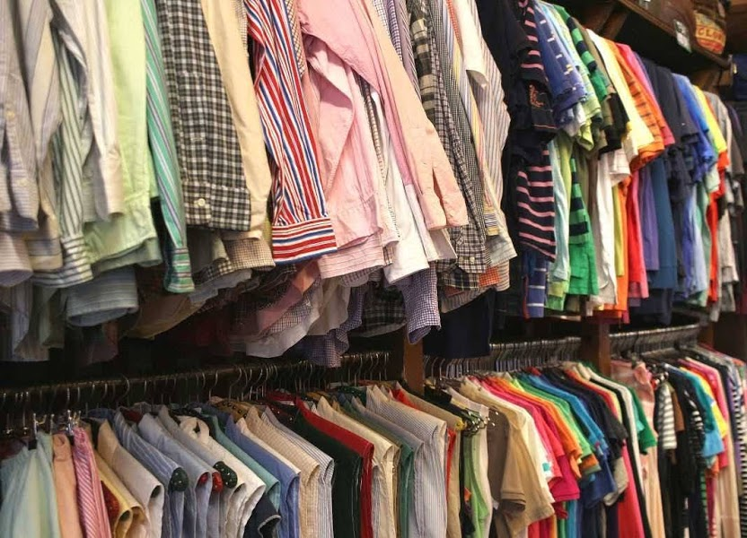
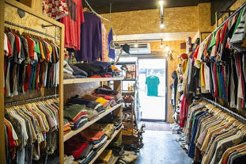
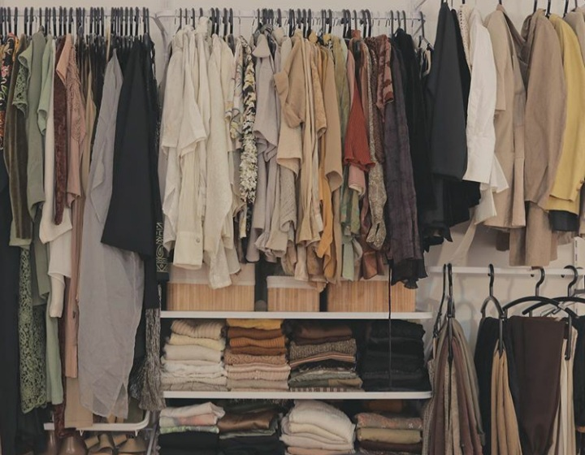
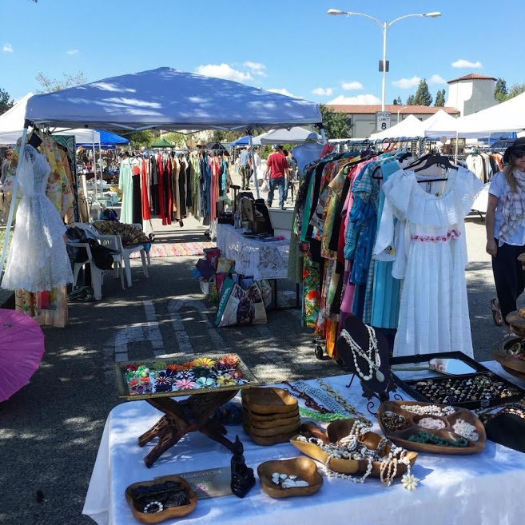
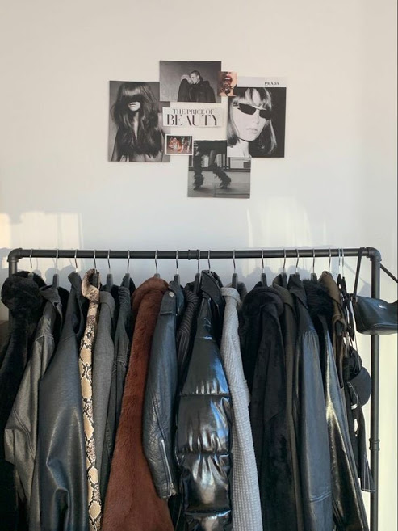
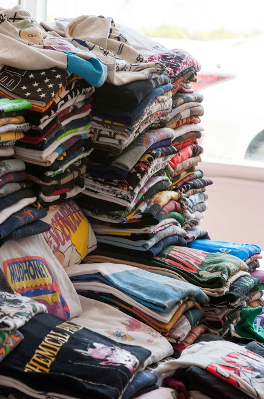
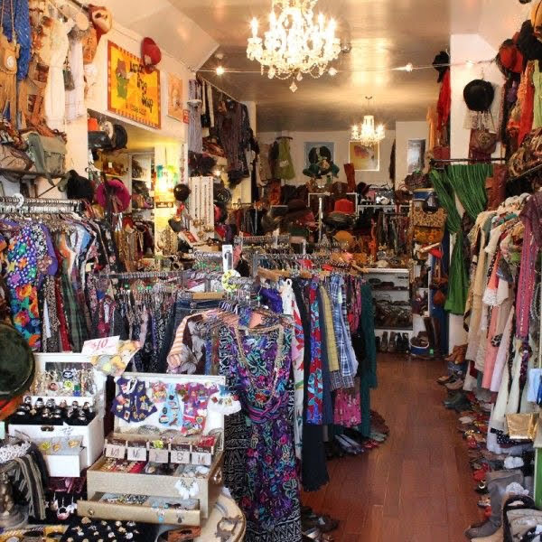
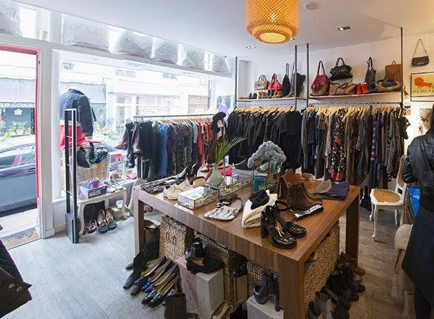

Muitos brechos e bazares sao criados por instituicoes beneficentes e os fundos sao sempre usados para ajudar pessoas que precisam. Consumir brechó é um meio de Moda sustentável é um conceito definido por metodologias e processos de produção que não são prejudiciais ao meio ambiente. A moda sustentável é uma vertente que se preocupa em utilizar métodos que não produzam ou minimizem os impactos ambientais gerados no processo de desenvolvimento de produtos.
  Brechó e Bazar
  Eu gosto muito de consumir brechos, tudo que ele proporciona é uma experiencia unica eu amo muito o misterio e a curiosidade de saber que peca legal eu poderei encontrar. Muitas pessoas nao gostam dizem que é roupa de gente morta e ou que so tem roupas feias eu discordo totalmnete, sim, algumas pecas realmente sao de pessoas que morreram mas depois que voce compra e da uma boa lavada nela a peca fica totalmente nova. Eu ja encontrei belissimas peças de alfaiataria e de lojas carissimas
Importancia de consumir brechós e bazares
A indústria fashion é a segunda que mais polui o meio ambiente. Por isso, surge um movimento que prega o consumo consciente de roupas e acessórios. No mundo todo, a fabricação de peças de poliéster, criadas com fibras sintéticas, requer 70 milhões de barris de petróleo todos os anos. Quando jogadas no lixo, as roupas de poliéster continuam poluindo, pois levam mais de 200 milhões de anos para se decompor. Nem materiais naturais, como o algodão, passam incólumes: uma simples camiseta exige 2.700 litros de água para ser produzida.
O que pode ser feito ?
- Consumir brechós e bazares
- Doar
- Entre DIVERSAS possibilidades de uso que uma peça de roupa pode ter
Diferença entre brechó e bazar
O bazar pode ser em um espaço fixo em ponto comercial ou também pode ser feito em casas, garagens, igrejas e associações. Normalmente, em bazares, as peças são muito baratas, a partir de R$ 1 ou R$ 5. E há diversos bazares beneficentes. Já os brechós são mais organizados, funcionam como lojas fixas mesmo
 Algumas peças que ja comprei

Eu ja comprei peças incriveis de alfaiataria entre outros,
Me segue lá no insta